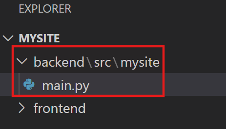
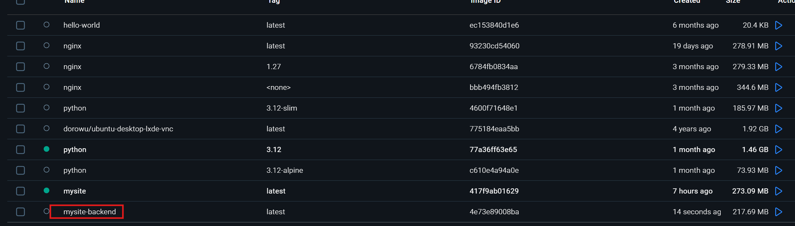
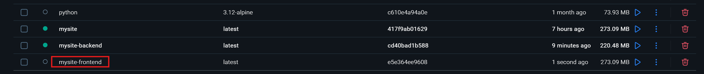
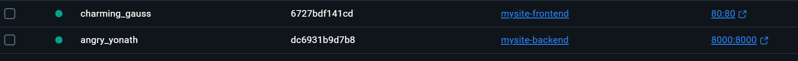
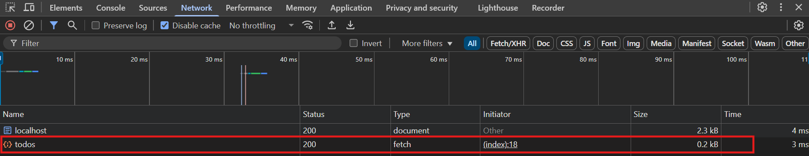

Eigene Docker-Images erstellen - Erweitert¶
Kehren wir zurücl zu unserer Anwendung mit der Todo-Liste zurück. Wir hatten bereits das Frontend erstellt und ein dockerfile. Wir werden diese Anwendung mit einem Fast-API Backend erweitern. Wir erweitern nun unser Projektverzeichnis mit der folgenden Struktur:

Außerdem wird noch eine virtuelle Entwicklungsumgebung .venv benötigt. Im Terminal geben wir ein:
Ordner .venv erstellen:
1 | |
Viruelle Entwicklungsumgebung aktivieren:
1 | |
Mit CTRL + SHIFT + P öffnen wir in VS-Code "Command Palette", wählen "Python: Select Interpreter" aus und wechseln zum .venv wo "Recommended" steht:

Nun installieren wir FastAPI:
1 | |
Auch der Server für FastAPI, muss installiert werden:
1 | |
Außerdem erstellen wir noch eine requirements.txt-Datei direkt im backend-Ordner:
1 | |
In die main.py Datei fügen wir den folgenden Code ein:
1 2 3 4 5 6 7 8 9 10 11 12 13 14 15 16 17 18 19 20 21 22 23 24 25 26 27 28 29 30 31 32 33 34 35 36 37 38 39 40 41 | |
Direkt im backend-Ordner erstellen wir eine dockerfile-Datei:

Der Inhalt ist in dieser Datei:
dockerfile im backend:
1 2 3 4 5 6 7 8 9 10 11 12 13 14 15 16 17 18 19 | |
Nun ist es an der Zeit, das Docker-Image zu bauen. Dazu wechseln wir im Terminal in den backend-Ordner und führen folgenden Befehl aus:
1 | |
In Docker Desktop sollte nun das neue Image erscheinen:

Nun starten wir den Container, mithilfe dieses Images:
1 | |
Jetzt kann man wie gewohnt über http://localhost:8000/docs die interaktive Swagger-UI Dokumentationsseite von FastAPI besuchen:

Jetzt muss im Frontend die index.html-Datei angepasst werden, damit wird mit dem Backend interagieren können. Dazu soll die index.html-Datei mit dem folgenden code ersetzt werden:
1 2 3 4 5 6 7 8 9 10 11 12 13 14 15 16 17 18 19 20 21 22 23 24 25 26 27 28 29 30 31 32 33 34 35 36 37 38 39 40 41 42 43 44 45 46 47 48 49 50 51 52 53 54 55 56 57 58 59 60 61 62 | |
Nun muss natürlich ein neues Image für das Frontend erstellt werden. Dazu wechseln wir in einem neuen Terminal in das frontend-Verzeichnis und führen folgenden Befehl aus:
1 | |
In Docker Desktop müsste nun das mysite-frontend-Image sichtbar sein:

Jetzt führen wir auch den Container für das Frontend aus:
1 | |
Die FastAPi Swagger-UI Seite ist immer noch erreichbar unter http://localhost:8000/docs und jetzt auch das Frontend unter http://localhost/. Im Frontend öffne ich die DevTools, gehe zu "Network" und lade die Seite neu:

Hier sieht man den sogenannten CORS-Fehler. Ein CORS-Fehler (Cross-Origin Resource Sharing) bedeutet, dass unser Frontend http://localhost/ versucht, mit dem Backend http://localhost:8000/docs zu kommunizieren, aber der Browser die Verbindung blockiert, weil das Backend nicht explizit erlaubt, von einer anderen Domain aus angesprochen zu werden.
CORS ist ein Sicherheitsmechanismus im Browser, der verhindert, dass Webseiten aus einer anderen Quelle (Origin) unkontrolliert auf Ressourcen zugreifen. Dabei handelt es sich um ein Standardverhalten von Browsern. Damit das Backend solche Anfragen erlaubt, muss man CORS freischalten – das geht mit der sogenannten CORSMiddleware. Nach der Anpassung sieht die main.py-Datei so aus:
1 2 3 4 5 6 7 8 9 10 11 12 13 14 15 16 17 18 19 20 21 22 23 24 25 26 27 28 29 30 31 32 33 34 35 36 37 38 39 40 41 42 43 44 45 46 47 48 49 50 51 52 | |
Nun müssen wir nochmal in das backend-Verzeichnis wechseln und einen neuen Docker-Image erstellen:
1 | |
Nun starten wir den Container, mithilfe dieses Images:
1 | |
Jetzt sind die beiden Container für das Frontend und Backend aktiv:

Wenn wir nochmal das Frontend aufrufen, sollte der CORS-Fehler verschwinden:

Man kann jetzt die Todos hinzufügen und unter "Networks" in den Dev-Tools beobachten wie das Frontend mit dem Backend kommuniziert:

Fazit¶
In diesem Kapitel wurde Schritt für Schritt gezeigt, wie man eine vollständige Webanwendung mit Frontend und einem FastAPI-Backend in separaten Docker-Containern betreiben kann. Dabei lag der Schwerpunkt auf einer praxisnahen Umsetzung: vom Einrichten der Verzeichnisstruktur über das Erstellen eigener Dockerfiles bis hin zur Bewältigung realer Herausforderungen – etwa CORS-Fehlern, die bei der Kommunikation zwischen verschiedenen Containern auftreten können.
Ein zentrales Prinzip von Docker ist die Trennung von Anwendungscode und Laufzeitumgebung. Durch das Erstellen eines eigenen Dockerfiles für das Backend und später auch für das Frontend wurde deutlich:
-
Jede Anwendung läuft isoliert in ihrem eigenen Container, unabhängig von anderen Komponenten.
-
Alle Abhängigkeiten, Konfigurationen und Installationen sind im Container selbst enthalten – es wird nichts vom Host-System benötigt.
-
Dadurch lässt sich die Anwendung plattformunabhängig betreiben – egal ob auf Windows, macOS oder Linux.
Ein weiteres zentrales Lernziel war das Verständnis für den Aufbau eines Dockerfiles: Es beschreibt präzise, wie ein Docker-Image zusammengesetzt ist – von der Basis über die Paketinstallation bis hin zum Startbefehl. Damit wird deutlich, wie man Anwendungen sauber paketiert, automatisiert ausliefert und in reproduzierbaren Umgebungen betreibt.